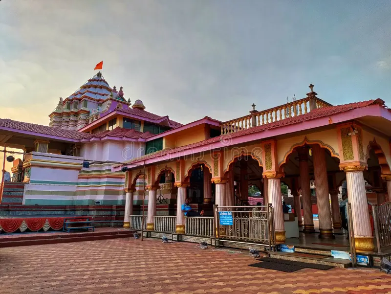

KUNKESHWAR
Kunkeshwar is a coastal town in Sindhudurg district, Maharashtra, renowned for its seaside Shiva temple, spiritual atmosphere, and scenic beauty.
WHERE IT IS ?
It is located in the Devgad Taluka, Sindhudurg district, Maharashtra which is about 16 km from Devgad town and easily accessible by road.
IMPORTANCE OF THIS PLACE :-
An ancient Lord Shiva temple built in Konkani–South Indian style, situated right on the seashore, known as the “Kashi of South Konkan” and a major pilgrimage site.
NEARBY PLACES FOR VISIT :-
STAYCATION
Stays are in Kunkeshwar and Devgadwith simple lodges , homestays and small resorts.
Cost for stay is ₹1,000 – ₹2,500 per night .
Food authenic are Malvani thali, seafood specialties, solkadhi, modak, and local vegetarian meals.